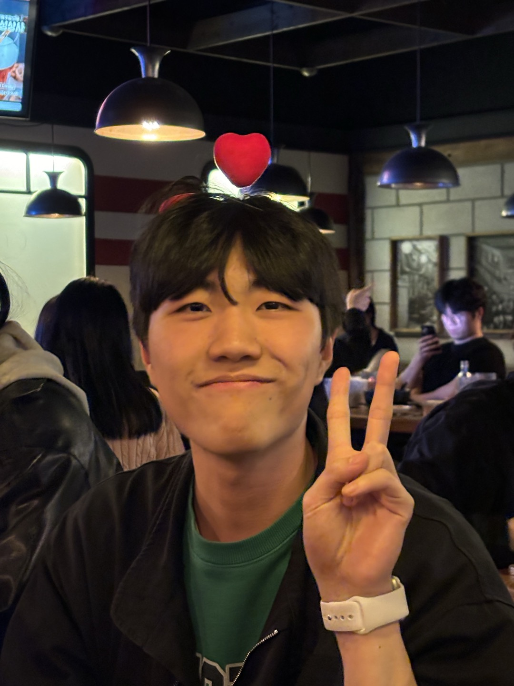

Reinforcement Learning
에이전트가 환경과 상호작용하며 장기적인 보상을 극대화하는 정책을 학습하는 방법을 연구합니다.
- Policy Learning
- Value Estimation
M.S. STUDENT · REINFORCEMENT LEARNING
류운종 · WOONJONG RYU
에이전트가 환경과 상호작용하며 더 나은 의사결정을 학습하는 방법을 연구하고 있습니다.
01 · ABOUT
강화학습을 중심으로 공부하고 연구하며, 관심 분야와 연구 경험을 한곳에 정리했습니다.

ABOUT ME
M.S. Student · Reinforcement Learning
안녕하세요. 강화학습을 연구하고 있는 석사과정 학생 류운종입니다. 에이전트가 불확실한 환경에서 경험을 통해 효과적인 정책을 학습하는 과정에 관심이 있으며, 이론과 실제 문제를 연결할 수 있는 연구를 목표로 하고 있습니다.
RESEARCH
에이전트가 환경과 상호작용하며 장기적인 보상을 극대화하는 정책을 학습하는 방법을 연구합니다.
딥러닝의 표현 학습 능력과 강화학습을 결합해 복잡한 상태와 행동 공간의 문제를 다룹니다.
불확실한 환경에서 안정적이고 효율적인 의사결정을 내리는 학습 알고리즘에 관심이 있습니다.
PUBLICATIONS
류운종, 김요한 · 한국전자통신학회 논문지, 21(3), 1147–1154
박서진, 손영인, 류운종, 김요한
대한전자공학회 하계종합학술대회 · 제주 롯데호텔 · 2026.06.23–26
류운종, 김민재, 김요한
한국통신학회 하계종합학술발표회 · 제주 해비치 호텔 · 2026.06.17–19
Woonjong Ryu, Yohan Kim
ICMIC · National Taiwan University of Science and Technology · 2026.08.19–22
EXPERIENCE
계명대학교 · 컴퓨터공학과
동서대학교 · 소프트웨어학과 · AI공학 부전공
동서대학교 · 메카트로닉스학과에서 소프트웨어학과로 전과
동서대학교 · 메카트로닉스학과 입학
02 · BLOG
각 카드를 누르면 제가 글을 기록하는 외부 채널로 이동합니다.